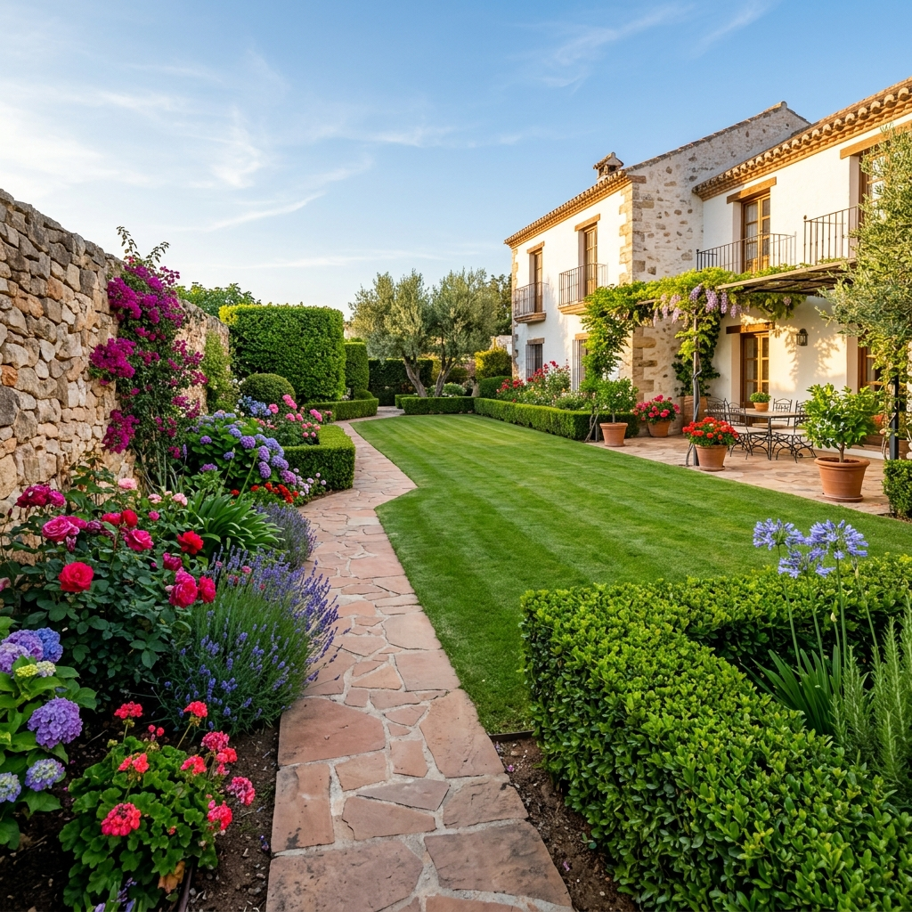
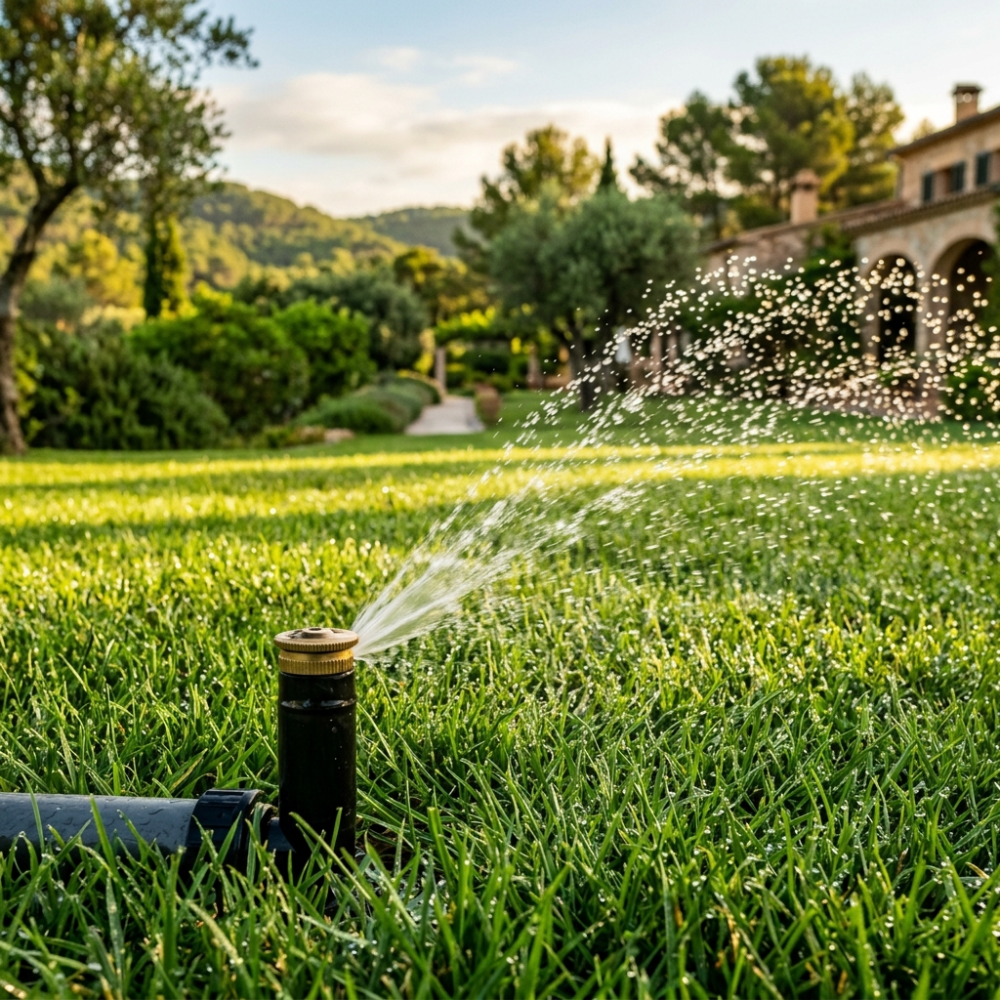
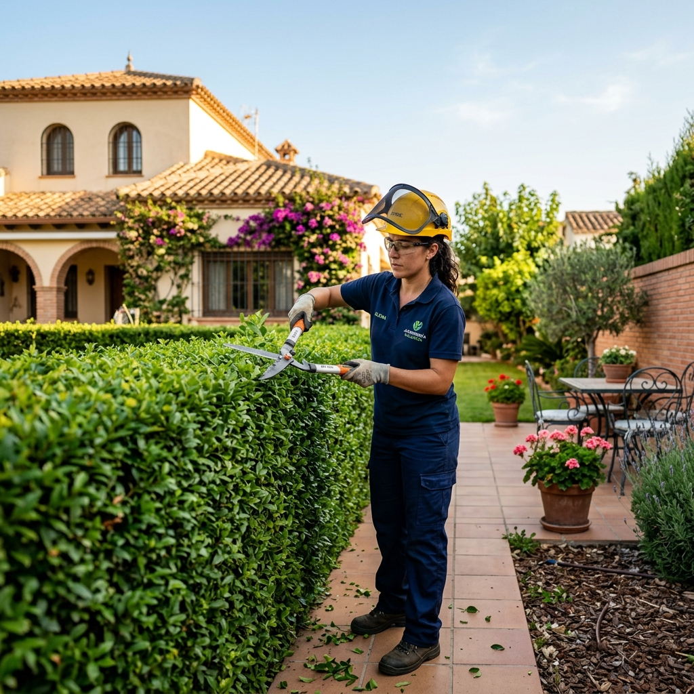
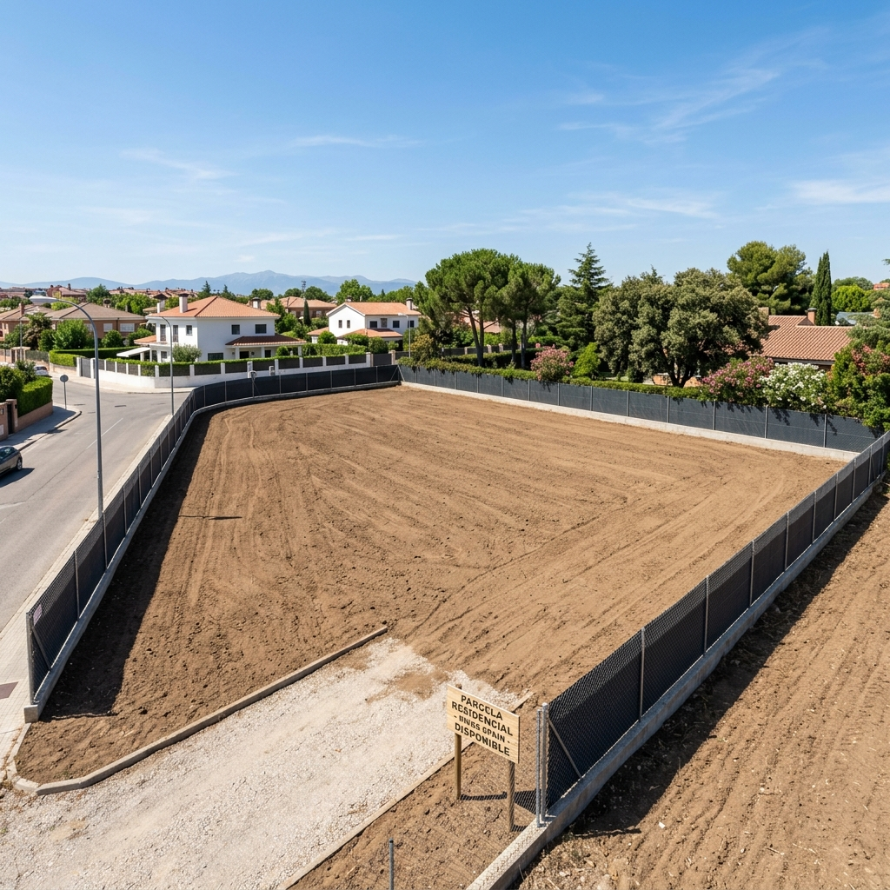
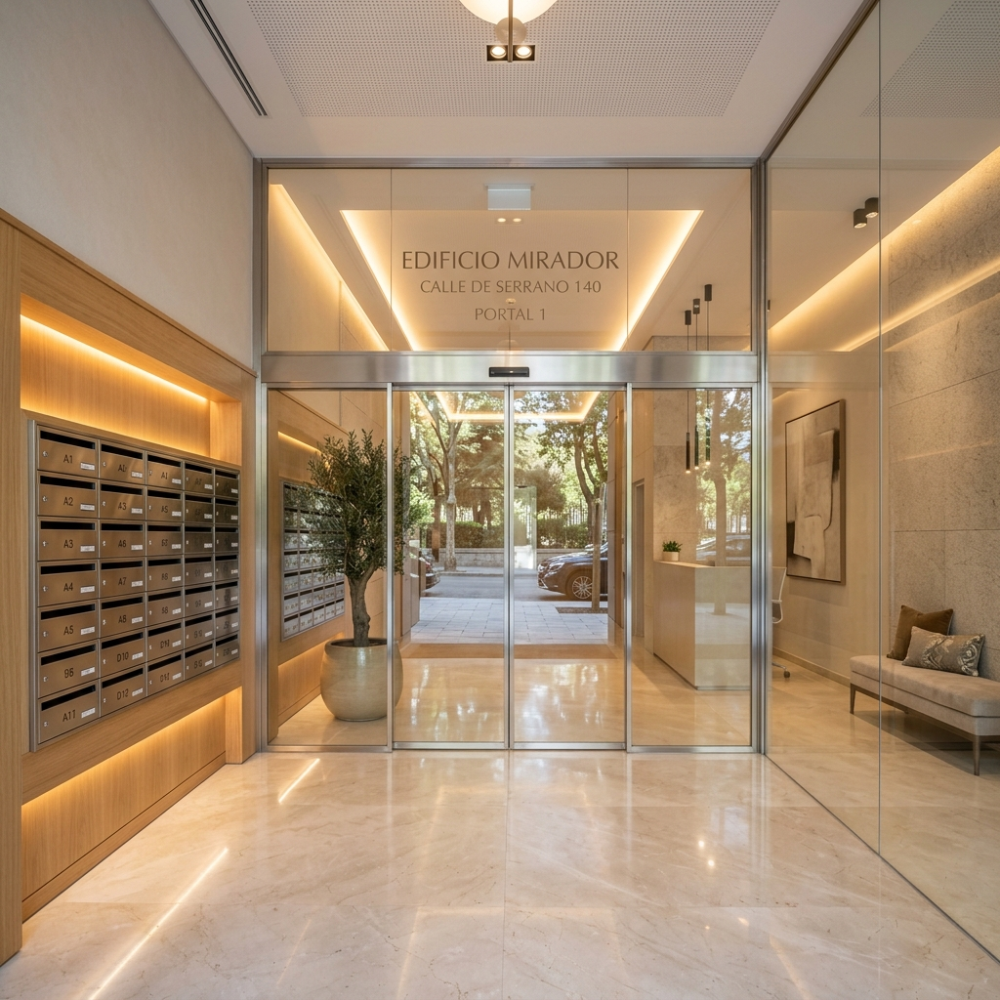

Cuidamos al detalle tus áreas verdes, comunidades, portales y terrenos en Madrid capital, área metropolitana y toda la provincia. Calidad garantizada directamente por WhatsApp.

Diseñamos un plan de cuidado continuo adaptado al ciclo natural de tu jardín. Nos encargamos de mantener el césped denso, verde y saludable, realizar los tratamientos de nutrición idóneos y prever cualquier plaga.

Un riego mal planificado consume agua en exceso y daña tus plantas. Nos encargamos de diseñar e instalar sistemas de riego automatizados por goteo o aspersión eficientes, o de reparar y ajustar las tuberías, electroválvulas y programadores de tu sistema actual.

La poda es esencial tanto para la salud del árbol o seto como para la seguridad de tu hogar. Realizamos podas de saneamiento, podas de formación en setos para darles un aspecto impecable, y saneamientos especiales retirando las ramas secas o peligrosas.

Los terrenos baldíos o parcelas descuidadas acumulan maleza y aumentan el riesgo de incendios y plagas. Ofrecemos desbroces mecánicos de alta eficacia para limpiar por completo tu parcela, solar o zona rústica, dejándola nivelada, segura y lista.

La primera impresión de tu comunidad de vecinos empieza en el portal. Realizamos tareas de mantenimiento exhaustivas y periódicas en portales, rellanos, escaleras, zonas comunes interiores, cristales y pasamanos para asegurar una higiene impecable.
Diseñamos soluciones todo en uno para urbanizaciones, mancomunidades y pequeños bloques residenciales. Gestionamos simultáneamente la limpieza interior de los portales, el desbroce periódico, el cuidado exhaustivo de los jardines comunitarios y el óptimo estado de los caminos exteriores.
Cuéntanos qué necesita tu espacio (jardín, portal, comunidad o solar) y te daremos una propuesta a medida directamente.
Hablar por WhatsApp